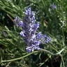

Correspondence Grimoire
Asthma
Type
Oils39

Spike Lavender Essential OilAsthma Therapeutic Index
Definition
Asthma is a chronic inflammatory condition of the airways characterized by reversible airflow obstruction, bronchospasm, wheezing, coughing, chest tightness, and shortness of breath. Triggers vary by individual and may include allergens, respiratory infections, exertion, cold air, emotional stress, and airborne irritants.
Indicated Oils
 Asafetida Essential Oil
Asafetida Essential Oil Lemon Balm Essential Oil
Lemon Balm Essential Oil Canadian Balsam Essential Oil
Canadian Balsam Essential Oil Peru Balsam Essential Oil
Peru Balsam Essential Oil Benzoin Absolute
Benzoin Absolute Cajeput Essential Oil
Cajeput Essential Oil Clove Essential Oil
Clove Essential Oil Costus Essential Oil
Costus Essential Oil Cypress Essential Oil
Cypress Essential Oil Elecampane Essential Oil
Elecampane Essential Oil Eucalyptus Essential Oil
Eucalyptus Essential Oil Lemon-Scented Eucalyptus Essential Oil
Lemon-Scented Eucalyptus Essential Oil Broad-Leaved Peppermint Eucalyptus Essential Oil
Broad-Leaved Peppermint Eucalyptus Essential Oil Frankincense Essential Oil
Frankincense Essential Oil Galbanum Essential Oil
Galbanum Essential Oil Helichrysum Essential Oil
Helichrysum Essential Oil Hops Essential Oil
Hops Essential Oil Hyssop Essential Oil
Hyssop Essential Oil- Lavandin Essential Oil
- Spike Lavender Essential Oil
- Lavender Essential Oil
- Lemon Essential Oil
- Lime Essential Oil
 Marjoram Essential Oil
Marjoram Essential Oil Peppermint Essential Oil
Peppermint Essential Oil Spearmint Essential Oil
Spearmint Essential Oil Myrrh Oil
Myrrh Oil- Myrtle Essential Oil
- Niaouli Essential Oil
 Longleaf Pine Essential Oil
Longleaf Pine Essential Oil Scotch Pine Essential Oil
Scotch Pine Essential Oil Cabbage Rose Absolute
Cabbage Rose Absolute- Rose Otto Oil
 Rosemary Essential Oil
Rosemary Essential Oil Clary Sage Essential Oil
Clary Sage Essential Oil- Spanish Sage Essential Oil
 Hemlock Spruce Essential Oil
Hemlock Spruce Essential Oil Tea Tree Essential Oil
Tea Tree Essential Oil Common Thyme Essential Oil
Common Thyme Essential Oil
Application Methods
- Massage: Dilute 2-3% in a carrier oil and massage gently into the chest, upper back, throat, and shoulders using slow upward strokes. Best used preventively, between flare-ups.
- Vaporizer/Diffuser: Add 4-6 drops to an electric diffuser or aroma vaporizer to perfume the room. Useful for opening airways and supporting calm breathing between attacks.
- Inhalation: Place 1-2 drops on a tissue, handkerchief, or cotton ball and inhale gently. Avoid hot steam inhalation during acute attacks; concentrated vapor can trigger bronchospasm in some asthmatics.
Suggested Blends
Chest Massage Oil (Preventive)
- 4 drops Frankincense Essential Oil
- 3 drops Lavender Essential Oil
- 2 drops Hyssop Essential Oil
- 1 drop Helichrysum Essential Oil
- 1 oz (30ml) sweet almond or jojoba carrier
Calming Diffuser Blend
- 3 drops Lavender Essential Oil
- 2 drops Frankincense Essential Oil
- 1 drop Lemon Balm Essential Oil
Clearing Inhalation (Tissue)
- 1 drop Eucalyptus Essential Oil
- 1 drop Niaouli Essential Oil